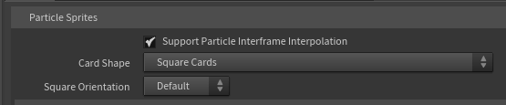
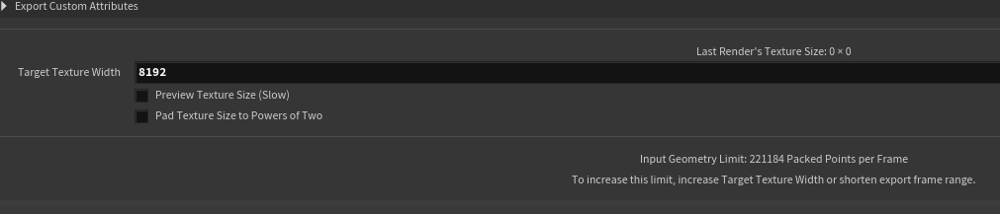
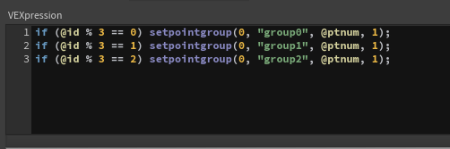
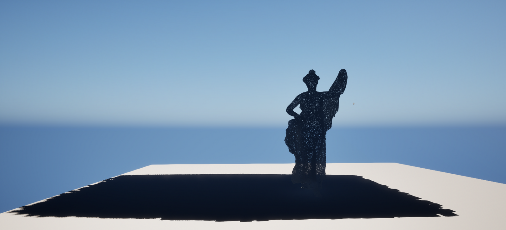
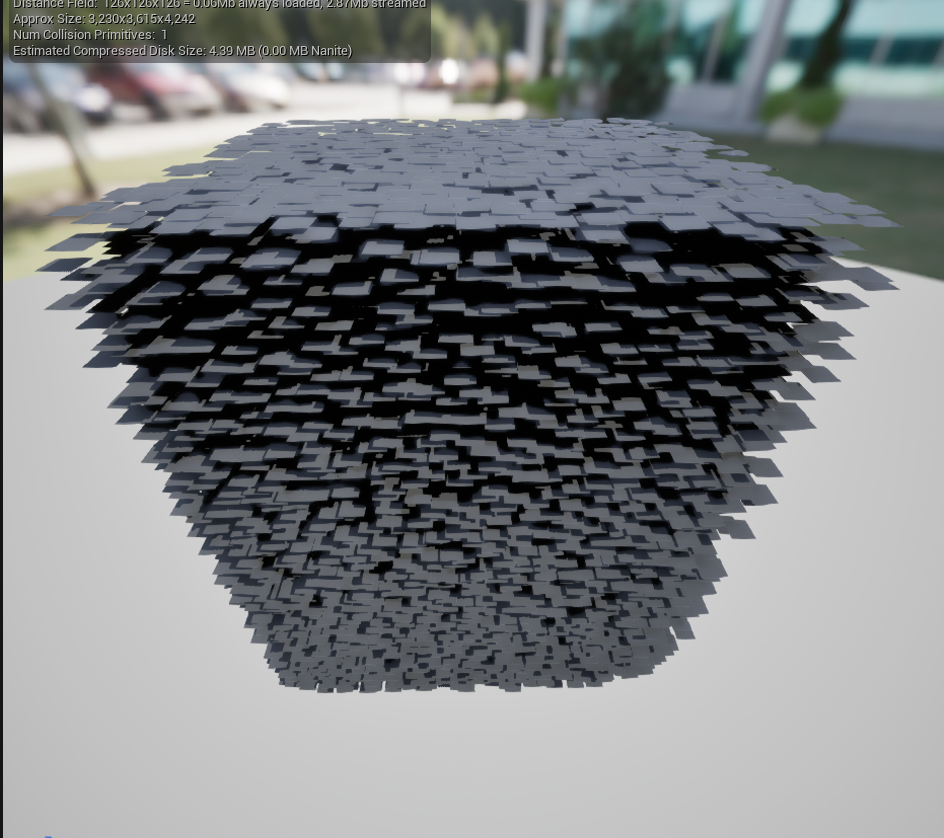
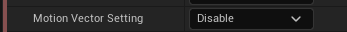

← 部落格 × Special Project | PART2


第 6 週
第 6 週計畫：
-
完成論文初稿（USD 流程）
-
嘗試 VAT 粒子，並與 Niagara 搭配
Houdini VAT 與 Niagara 測試
由於 Niagara 在把大量粒子匯入 Unreal 時有限制，而 VAT Particle Sprites 又只支援卡片形狀的幾何體，我在測試能否從 VAT 貼圖中取出位置、旋轉等資料再餵給 Niagara。這樣就能用 Niagara 的 Mesh Renderer 把粒子算成球體或任何 3D 形狀。

只能算出卡片形狀
VAT 測試
為了快速從 Houdini 匯入 50 萬個粒子，我先用 VAT 把粒子運動烘焙成貼圖。由於模擬的點數是 50 萬，而每格上限是 221,184，我依照 ID 屬性把粒子分成多組，讓每組都不超過上限。


另一個問題是，匯入 VAT Particle Sprites 時，陰影形狀和套用材質前的原始網格一樣。


網格沒有指定材質。
開啟「Evaluate World Position Offset in Ray Tracing」後，陰影 pass 會依照 WPO 位移後的位置計算網格形狀，而不是原始幾何體。
為了解決這個問題，我也嘗試結合 VAT 與 Niagara：從 VAT 位置貼圖取出資料再套用到 Niagara。這樣在 Niagara 系統中就能選擇任何形狀來呈現粒子。另外，網格需要使用全精度 UV。
這個 Niagara 模組讀取 VAT 資料的方式是：先在 Custom HLSL 節點中計算 UV 座標，用每個粒子的索引和目前時間決定要從 VAT 貼圖取樣哪個像素。U 和 V 輸出組合成 Vector2D，再送進兩個貼圖取樣器，一個取位置貼圖、一個取顏色貼圖。取樣得到的位置值介於 0 到 1 之間，再用 Houdini 輸出的邊界框最小值與最大值重新映射到世界座標。最後透過 Map Set 節點把結果寫回每個粒子的 Position、Scale 和 Color 屬性。這讓 Niagara 能以即時效能，用 Houdini 預先模擬的資料驅動數十萬個粒子。
這個 HLSL 模組把每個粒子的索引和目前時間轉換成取樣 VAT 貼圖用的 UV 座標。所有關鍵參數都開放成輸入，不用改程式碼就能在不同的 VAT 設定中重複使用。
這個 HLSL 模組把每個粒子的索引和目前時間轉換成取樣 VAT 貼圖用的 UV 座標。所有關鍵參數都開放成輸入，不用改程式碼就能在不同的 VAT 設定中重複使用。
這個節點從取樣後的 VAT 貼圖中取出位置與縮放資料。RGB 通道存放粒子的 XYZ 位置，Alpha 通道則存放統一的縮放值，平均套用到三個軸上。
匯入新的 VAT 粒子貼圖後，所有參數都可以在這裡調整。
一開始我用 Mesh Renderer 搭配球體，但因為要算 50 萬個點，FPS 非常低，大約只有 18。
另外要注意，為了避免粒子閃爍，Motion Vectors 要設為 Disable。如果還是閃爍，陰影也要關掉。

這是結合 VAT 與 Niagara 的最終結果，陰影正確顯示，FPS 也維持得不錯。